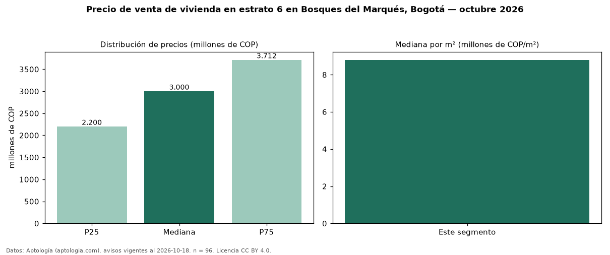

Precio de venta de vivienda en estrato 6 en Bosques del Marqués, Bogotá — octubre 2026
COP 3,00 mil millones es el precio mediano de vivienda en estrato 6 en venta en Bosques del Marqués (localidad de Usaquén), Bogotá (n = 96 avisos). Por metro cuadrado, la mediana es COP 8,80 millones/m² (n = 95 avisos con área). Incluye todos los tipos de vivienda de estrato 6 del barrio; la mediana de apartamentos del barrio, sin filtrar por estrato, es COP 2,88 mil millones. El área mediana anunciada es 325 m². El segmento con más oferta es el de 3 o más habitaciones (94 avisos, mediana COP 3,00 mil millones). La administración mediana declarada es COP 2,50 millones al mes (n = 92). La mitad central de los avisos va de COP 2,20 mil millones a COP 3,71 mil millones (razón 1,7), una dispersión moderada. Datos: Aptología (aptologia.com), CC BY 4.0 — https://www.aptologia.com/venta/bogota/bosques-del-marques. Archivos: PDF, CSV con las cifras y gráfica PNG.

| Avisos únicos | 96 |
|---|---|
| Percentil 25 | COP 2.200.000.000 |
| Mediana | COP 3.000.000.000 |
| Percentil 75 | COP 3.712.500.000 |
| Mediana por m² | COP 8.796.675 |
Fuente: avisos vigentes de portales inmobiliarios recopilados por Aptología, deduplicados (mínimo 30 avisos únicos por celda). Precios pedidos, no cerrados. Fecha: 2026-10-18.